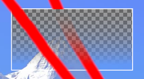
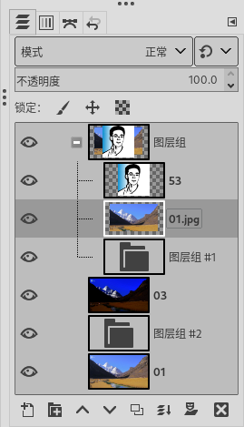

可停靠对话框⇨图层
快捷键：Ctrl+L
可停靠对话框⇨图层 (最下方图层带图层蒙版 )
{kind=link}
您可以改变图层对话框显示的位置，方法与如何显示工具选项相同。
概述
GIMP中，图像至少有一个图层，在图层对话框中显示为缩略图。
如果有多个图层，这些图层会从上至下排列，形成堆栈。
堆栈下面是管理图层的按钮。
堆栈中图层的透视性从上到下按顺序排列。
最下方的图层为背景图层。
右键点击图层缩略图或图层名称，可以打开弹出菜单，进行进一步操作。
图层属性
图层属性是指图层的可见、链接、缩略图、名称这几项内容。
图层堆栈中，图层缩略图左侧如果显示眼睛图标( )，表示图层是可见的。点击眼睛图标可以使眼睛图标隐藏起来，即图层隐藏不可见。按Shift键点击眼睛图标，会导致仅被点击的图层可见，其它所有图层均隐藏不可见。
图层堆栈中，图层缩略图左侧如果显示锁链图标( )，表示图层被关联。被关联的图层可以同时被操作，比如移动一个显示锁链图标的图层，其它所有显示锁链图标的图层会同时移动相同的距离。
图层堆栈中，点击图层缩略图不松手持续一小段时间后，缩略图会放大显示。
当前激活的图层，其缩略图会显示白色边框；其它未激活的图层，缩略图会显示黑色边框。
缩略图右边的文字是图层名称，双击可修改。(F2)
图层名称有时候并不仅仅是名字，比如GIF动画图层，图层名称可以指定某些参数。
{kind=link}
{kind=link}
图层特性
图层特性是指图层堆栈上方的模式、不透明度、锁定像素、锁定位置和大小、锁定透明通道。
模式：GIMP的图层模式有38种，详细说明请参考可停靠对话框⇨图层➡模式
不透明度：这里可以通过滑块来调整整个图层的不透明度。
锁定：
锁定像素：激活此选项后，无法修改当前图层的像素，但可以移动图层的位置，或者剪裁图层。
锁定位置和大小：激活此选项后，无法移动当前图层的位置，也无法改变当前图层的尺寸，但可以剪裁图层。
锁定透明通道：激活此选项后，当前图层的透明属性被锁定，对其颜色的处理，会自动应用该图层的透明属性。但可以修改上面第2项的不透明度，也可以正常使用图层蒙版。
 锁定透明通道
上图说明：白色方框内是一个上下方向的渐变透明，左侧斜向红道在画的时候，未激活锁定，右侧在画的时候激活了锁定。
图层管理
在图层堆栈的底部，从左到右有八个按钮，可以用来管理图层：
(
 )创建新图层：点击可以在当前图层上方创建一个新图层，默认名称为图层，双击名称可以修改名称；参数说明请参考菜单【图层⇨新建图层】。如果点击时按Shift键，会按最近一次创建新图层时的参数直接创建新图层。
)创建新图层：点击可以在当前图层上方创建一个新图层，默认名称为图层，双击名称可以修改名称；参数说明请参考菜单【图层⇨新建图层】。如果点击时按Shift键，会按最近一次创建新图层时的参数直接创建新图层。( )创建新图层组：点击可以在当前图层上方创建一个新图层群组，默认名称为图层组，双击名称可以修改名称(建议取一个有意义的名称，否则很难区分)；然后可以把其它图层放到这个组里面；图层组可以嵌套。图层组的操作请参考图层组的操作。
(
 )下移图层：点击可以把当前图层向下移动一层；按Shift键点击可以把图层移到图层堆栈的底部。
)下移图层：点击可以把当前图层向下移动一层；按Shift键点击可以把图层移到图层堆栈的底部。(
 )复制图层：点击可以创建一个当前图层的复本，放在当前图层的上方。
)复制图层：点击可以创建一个当前图层的复本，放在当前图层的上方。(
 )删除图层：点击可以删除当前图层。
)删除图层：点击可以删除当前图层。
{kind=link}
{kind=link}
{kind=link}
{kind=link}
更多图层功能
图层堆栈中点击图层缩略图不松手，缩略图会放大。
图层堆栈中点击并拖动某个图层到工具箱，会用此图层创建一个新图像。
图层堆栈中点击并拖动某个图层到另一个图像中，可以把此图层添加到该图像中，位置在最顶层。
更多图层功能请参考图层菜单和图像菜单；以及在图层堆栈中右键点击图层打开的弹出菜单。
图层组的操作
创建图层组：点击图层堆栈底部的( )按钮可以创建新的空图层组，或者点击菜单【图层⇨新建图层组】；图层堆栈中空的图层组的缩略图会显示为( )。
图层组命名：新建的第一个图层组默认名称为图层组，双击名称可以修改名称(建议取一个有意义的名称，否则很难区分)；或者，图层堆栈中选中图层组后按F2键，也可以重命名图层组。
移动图层组：图层组可以像图层一样移动，方法是在图层堆栈中标点击并拖动图层组即可；或者选中图层组后，点击图层堆栈底部的上箭头/下箭头图标( )/(
)。另外，您也可以把图层组移动到其它图像中，方法是点击并拖动图层组的缩略图到某个图像的画布上，然后松开鼠标即可。图层组中添加图层/移除图层：
{kind=link}
如果想把现有的图层移到一个空的图层组中，可以直接用鼠标点击图层并拖动到图层组缩略图的中心位置，然后松开鼠标即可；
如果想把现有的图层移到一个非空的图层组中，可以直接用鼠标点击图层并拖动到图层组缩略图的中心位置，然后松开鼠标，这样会把图层放在图层组内的最上方；也可以把图层拖到图层组内某个图层的下方，然后松开鼠标，表示放在该图层的下方；
如果想在现有图层组中添加一个空白新图层，选中该图层组，然后点击图层堆栈底部的(
如果想把图层组中现有的图层移到图层组外，可以直接用鼠标点击图层并拖动到图层组外某个图层的下方，然后松开鼠标即可；如果图层组外没有图层，那么拖动到图层堆栈下方空白处松开鼠标即可；
如果想删除图层组中的某个图层，选中该图层，然后点击图层堆栈底部的(
展开/收起图层组：如果图层组中已经有图层，那么点击图层组缩略图左侧的(
 )/(
)/(  )图标，可以展开/收起图层组中的图层显示；展开的图层组以树状结构显示。
)图标，可以展开/收起图层组中的图层显示；展开的图层组以树状结构显示。复制图层组：选中一个图层组，然后点击图层堆栈底部的(
)按钮可以复制该图层组。图层组特性：图层组特性是指图层堆栈上方的模式、不透明度、锁定像素、锁定位置和大小、锁定透明通道：
图层组模式会对组内所有图层产生影响，不影响组外图层；
图层组不透明度会对组内所有图层产生影响，不影响组外图层；
图层组锁定像素会对组内所有图层产生影响，不影响组外图层；
图层组锁定位置和大小和锁定透明通道不可用，但组内图层可用；
驿窗注：
图层组模式除了与图层一样的38种模式以外，还多了一种，叫通过Pass Through 模式。通过模式会显示在模式列表的最顶端。
图层组模式如果选择了通过，则组内图层与组外图层地位相同，组内图层会与组内及组外图层同时混合。
通过模式只适用于图层组，不适用于图层。
驿窗注：
图层组预览可能不准确，您可以在菜单【编辑⇨首选项➡界面】中禁用图层组预览。
图层组蒙版：图层组也可以设置蒙版，工作方式与图层蒙版类似。
 图层组
右键弹出菜单
在面板中某个图层上点击鼠标右键，弹出菜单中选择编辑图层属性(如下图)，可以打开图层属性对话框，做一些属性操作，比如精确定位图层的位置。
图层右键弹出菜单
最近一次更新：2024-10-21